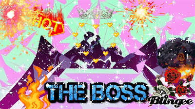
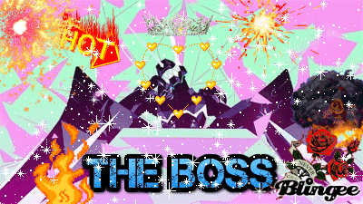

SUPA HOT FIRE
 
DICK LIKE VIAGRA
ASS LIKE NIAGRA
IMA SUCK IT UP LIKE LUIGI, PLASMA
BIG BOSS, BURNISH GLOSS
FLOW SO HOT
BUT YOU KNOW I'M NOT A RAPPER
___________________________
Goth is a way of life, not a choice.
We Burnish will rise, and Foresight will fall. ok but like no offense, all of you "goth" or "punk" girls on here are all posers. literally. all of you. unless you did the time and got harassed in elementary/middle/high school, (and i'm not talking about ur in high school right now and it just became the cool thing to do to dress goth/punk, fuck y'all) but i've literally been this way my WHOLE life and tagging me in the whole "goth girl 2k17" memes is fucking dumb bc i've had the same style since birth?? i've had black hair and bangs when i was 10???? ur "goth queen" was dressing like a prep all but 2 years ago.... yikes ??? people have literally been beaten the shit out of and MURDERED for my type of style but now it's the "in" style?? nah fuck that, i know ur favorite band is MCR :| We live, we die, we live again. Real Emo" only consists of the dc Emotional Hardcore scene and the late 90's Screamo scene. What is known by "Midwest Emo" is nothing but Alternative Rock with questionable real emo influence. When people try to argue that bands like My Chemical Romance are not real emo, while saying that Sunny Day Real Estate is, I can't help not to cringe because they are just as fake emo as My Chemical Romance (plus the pretentiousness). Real emo sounds ENERGETIC, POWERFUL and somewhat HATEFUL. Fake emo is weak, self pity and a failed attempt to direct energy and emotion into music. Some examples of REAL EMO are Pg 99, Rites of Spring, Cap n Jazz (the only real emo band from the midwest scene) and Loma Prieta. Some examples of FAKE EMO are American Football, My Chemical Romance and Mineral EMO BELONGS TO HARDCORE NOT TO INDIE, POP PUNK, ALT ROCK OR ANY OTHER MAINSTREAM GENRE
dag lovingly made this site if u claim it ur a bitch ass loser♡